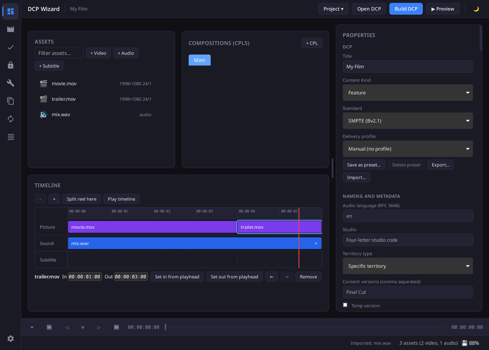
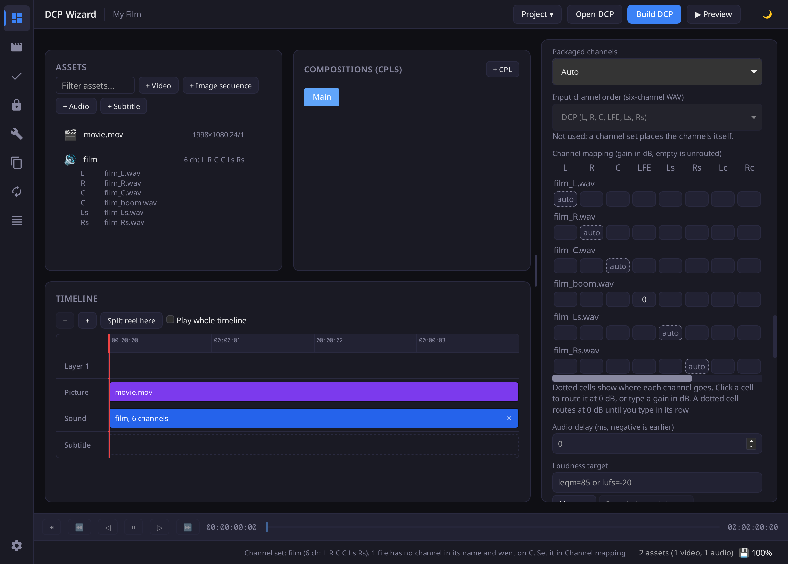
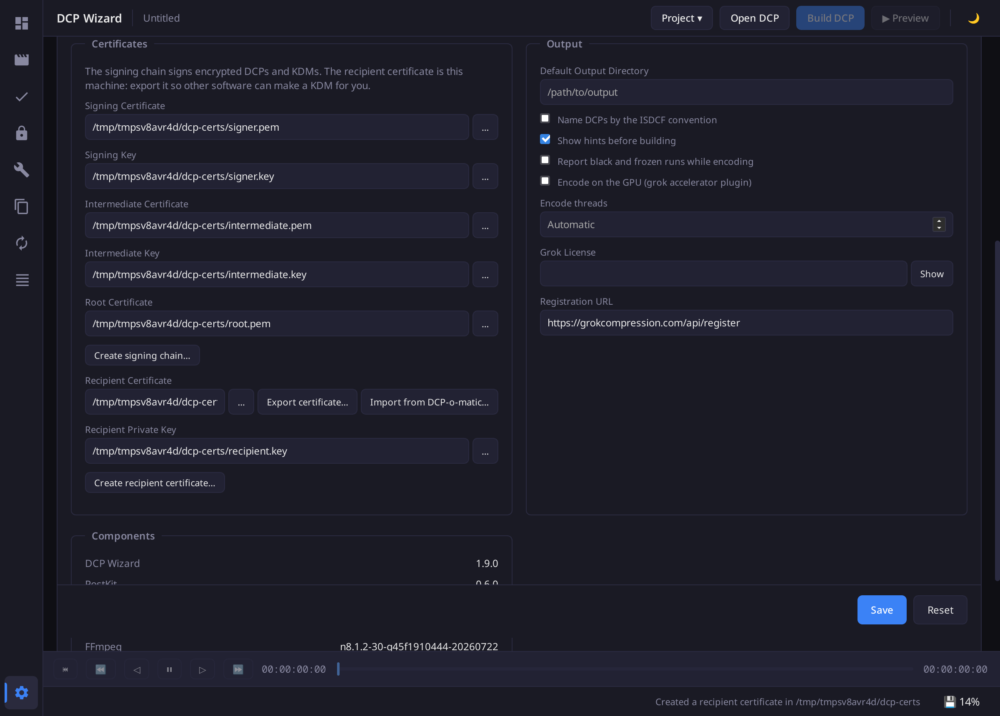
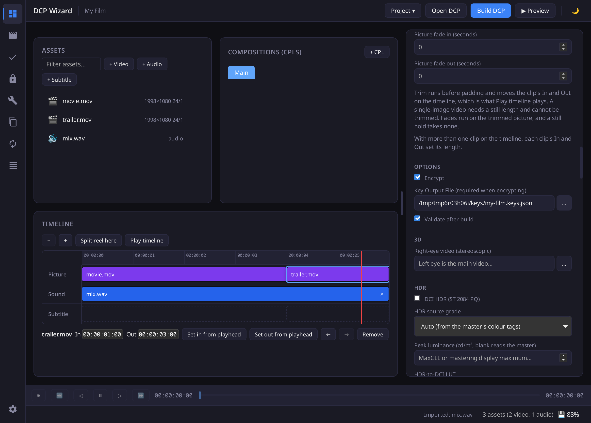
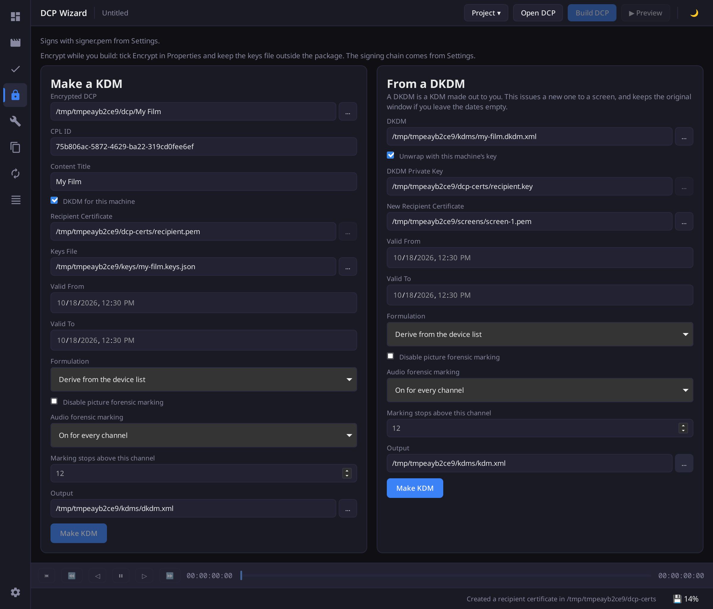

Manual
The sidebar on the left switches between screens: Project, Reels & Timeline, Verify, Encryption & KDM, Tools, Version File, Rebuild DCP, Jobs and Settings. You build a DCP on Project. It has Assets and the Timeline on the left, and Properties, the build settings, on the right.
Each job below shows the app first, then the same job from a terminal where there is one.
- Build a DCP
- Edit the timeline
- Properties
- Sound
- Picture size and position
- Saved presets
- Encrypt it
- Make a KDM
- Re-wrap a DKDM
- Export the recipient certificate
- Build several DCPs
- Validate a DCP
- See the reels of a package
- Play a package
- Encode to JPEG 2000
- Transcode a video to frames
- Measure loudness
- Copy a DCP to a drive
- Make a QC report
- Convert SRT to SMPTE subtitles
- Extract subtitles
- Burn in subtitles
- Convert to a DCI container
- Re-ingest a package
- Export a DCP to MP4 or ProRes
- Make a Version File
- Rebuild a DCP
- Use the keyboard
- Change the settings
- More from a terminal
Build a DCP
In the app
- Open Project. Drag your video onto Assets, or press + Video. It is placed on the Timeline.
- If the sound is a separate file, press + Audio and pick it. See Sound if you have one file per channel.
- In Properties, type a Title.
- Under Output, pick a Folder.
- Press Build DCP.
The DCP is written to a new folder inside Folder, named after the title. Progress shows in Jobs.
If a setting looks wrong, the app shows a hint before it starts. Press Build anyway or Go back.
When you import a video, the app reads its size, frame rate and colour, and fills in the Picture settings for you. The line under Properties, Picture shows what it found. Fields it filled have a dashed bar on the left. A field you change yourself is never overwritten. A 23.976 fps video becomes a 24 fps DCP, and 29.97 becomes 30.

From a terminal
dcpwizard create --title "My Film" --video movie.mov --audio mix.wav --output ./dcp
Add --check to see the hints without building.
Edit the timeline
The Timeline, under Assets, shows what goes into the DCP from left to right. It has these rows:
- Picture: your clips, one after another. Empty space becomes black and silence.
- Layer 1, Layer 2 and up: clips shown on top of the Picture row, such as a title or a logo with a transparent background. They have no sound.
- Sound and Subtitle: see Sound.
Add a clip
Every video you import goes on the end of the Picture row. To place one yourself, drag it from Assets onto a row:
- Drop it on a clip to put it right after that clip.
- Drop it on empty space to put it where you dropped it.
- Drop it on the empty row at the top to start a new layer.
Trim or move a clip
- Click the clip.
- Type In and Out as timecodes in the clip's own file, such as
00:00:02:00for 2 seconds in. Or play the preview to the frame you want and press Set in from playhead or Set out from playhead. - To move the clip, drag it along its row, or onto another row.
The trim cuts the sound with the picture. With only one clip, Trim off the head and Trim off the tail in Properties, Trim & Stills do the same as In and Out, and take 2s or 48f.
Remove deletes the selected clip. Two clips cannot overlap on one row. For a clip on a layer, Opacity sets how much of it shows.
− and + zoom the timeline. Click the ruler to move the preview there. Tick Play whole timeline to have Preview play the timeline instead of the clip's file.
Put a logo or title over the film
- Make a PNG the size of the film's frame, with the logo where you want it and the rest transparent. A smaller image is scaled up to fill the frame.
- Press + Video and pick the PNG. It goes on the end of the Picture row. Drag it onto the empty row at the top of the Timeline to make it Layer 1.
- Drag it to where it should start. A still lasts 5 seconds. Click it and change Out to make it longer or shorter.
- Set Opacity, from 0 to 100, if it should be see-through.
Reels
With one clip, set the reels in Properties, Reels. With several clips, those fields are greyed out and you set the reels on the Timeline instead. A new clip does not start a new reel by itself.
- Click the ruler where the new reel should start, for example where the second clip begins. The playhead line moves there.
- Press Split reel here, in the bar above the Timeline next to − and +. A marker appears on the ruler.
Click a marker to remove it.
Several clips
- Every clip must have the same frame rate as the first one. Convert a clip at another rate before you import it.
- These are not available: Burn subtitles into the picture, Right-eye video, DCI HDR, generic tone mapping and picture fades.
- A JPEG 2000 clip can only go on the Picture row.
To make more than one CPL in a project, press + CPL above the timeline. Each CPL has its own timeline, and Build DCP builds the one selected.
Properties
Properties holds every build setting, in these groups:
- DCP: Title, Content Kind, Standard and Delivery profile.
- Output: the folder the DCP goes in.
- Picture: Resolution, Frame Rate, Bandwidth, Quality and Source colour space.
- Source Picture: crop, auto-crop, deinterlace, denoise, rotate, flip, scale and offset. See Picture size and position.
- Audio: see Sound.
- Naming and metadata: the parts of the ISDCF name, the audio language and the mastering details.
- Trim & Stills: trims, still length and picture fades.
- Options: Encrypt and Validate after build.
- 3D: a right-eye video for a 3D DCP.
- HDR: a DCI HDR package from an HDR source.
- Reels: reel length and split points.
- Markers: CPL markers. With none, FFOC and LFOC go on the first and last frame.
- Ident Library: idents, rating cards and anti-piracy clips to play before or after the film.
- Versions: a list that builds one CPL per entry.
- Padding: black and silence before and after the film.
- Subtitles & Captions: subtitle and closed caption files and how they look.
- Sign Language: a signer video, carried on sound channel 15.
Sound
Pick the case that matches your files.
The sound is in the video
There is nothing to do. The Sound row shows "embedded" under the clip, and the build uses the video's sound. A stereo mix stays stereo in the DCP. To make 5.1 from it, set Properties, Audio, Upmix stereo to 5.1 to Variant A or Variant B. A splits the sound by frequency, B keeps the stereo as it is and adds delayed surrounds.
If the video has no sound, the Sound row is empty. Add the sound with + Audio as below.
One WAV with every channel
- Press + Audio and pick the WAV.
- It appears on the Sound row and replaces the video's sound.
A six-channel WAV must be in the order L, R, C, LFE, Ls, Rs. If yours is L, R, C, Ls, Rs, LFE, set Properties, Audio, Input channel order to match. For a stereo WAV, Upmix stereo to 5.1 makes 5.1 from it.
One WAV per channel
- Press + Audio and pick all the WAVs at once.
- The app joins them into one sound, which replaces the video's sound. In Assets it is one entry, with each file listed under it next to the channel the app read from its name.
- Check that each file is on the right channel. See Choose each file's channel.
The app reads the channel from the last part of each file name, after the last _, ., - or space. Upper or lower case does not matter. It knows L, R, C, LFE, Ls, Rs, Lc, Rc, BsL, BsR, HI and VI. It also reads Left, FL, Right, FR, Centre, Center and FC as L, R and C, Sub as LFE, SL and Lss as Ls, SR and Rss as Rs, Lrs and Lsr as BsL, Rrs and Rsr as BsR, and VIN as VI.
film_L.wavandfilm_left.wavgo on L.film_Rs.wavgoes on Rs.film_surround_l.wavgoes on L, not Ls, because only the last part,l, counts. Rename it tofilm_Ls.wav, or move it in the grid.
The files are joined only if the rest of the name is the same, film here. A file named only by its channel, such as FL.wav or LFE.wav, also counts, and those files join into one sound named after their folder.
Any other ending, such as film_SW.wav or reel_1.wav, is not recognised. That file goes on C, and the status bar tells you. Leave it there and it is mixed into the centre channel. So reel_1.wav to reel_6.wav all start on C. Either rename them before importing, for example to reel_L.wav, reel_R.wav and so on, or move each one in the grid as below.
Choose each file's channel
Channel mapping is a grid in Properties. Scroll Properties down to the Audio group, after Source Picture. Each row is one of your files, named on the left, or one channel of a multichannel WAV. Each column is a channel of the DCP, labelled L, R, C, LFE, Ls, Rs and so on, and the columns from Lc to VI sit on a second line under each row. A dotted cell shows where a row goes now. It reads auto. Leave a row empty to keep that route.
- Find the row of the file you want to move.
- Click the cell in the column it should go to. The cell shows 0, which means it goes there at full level. The dotted cell in that row goes plain, because the row now goes only where you clicked.
- To make it quieter or louder, type a number of dB in the cell instead, such as -3. A cell that holds anything else turns red, the text under the grid names it, and Build DCP refuses to start.

Do this for every row in the wrong place, one row at a time. For film_SW.wav, click its LFE cell. To make the left surround 3 dB quieter, type -3 in the Ls cell of the film_Ls.wav row. For reel_1.wav to reel_6.wav, click one cell per row in the order your mix uses: row 1 on L, row 2 on R, and so on.
If the text under the grid says "Typed gains are off", set Upmix stereo to 5.1 to Off and Input channel order to DCP. Neither is needed for one WAV per channel.
Sound for one clip only
Drag a WAV from Assets onto the Sound row under that clip. The ✕ on it removes it, and the clip goes back to its own sound. A WAV made of one file per channel always covers the whole timeline.
Set the loudness
Get the channels right first. The loudness is measured after Channel mapping.
- In Properties, Audio, Loudness target, type the level you want, such as
lufs=-24for -24 LUFS orleqm=85for 85 dB Leq(m). - Optionally press Measure to check. Source is the level of your sound now. Delivered is the level the DCP will have. The graph shows the loudness of the mix over time. Tick a channel under the graph to add its own curve, and untick Mix to hide the mix.
- Build. The build brings the sound to the target. A LUFS target is integrated loudness.
The target turns the whole mix up or down by one amount, so the gains you typed in the grid keep their balance.
If a build fails with "true-peak ceiling exceeded", the target is too loud for this mix. Pick a lower target, or set True-peak ceiling, just under Loudness target, closer to 0. It is -1 dBTP by default.
To set the level by hand, type it in Gain, in dB. Once Gain has a value, the build uses it and ignores the target. After a Measure, Set gain to reach target works out that value for you.
Fades, delay and the rest
All under Properties, Audio:
- Fade in and Fade out: seconds of fade at the start and end.
- Audio delay: moves the sound later, in ms. A negative number moves it earlier.
- Packaged channels: how many channels the DCP carries, the extra ones silent. On Auto, a 5.1 mix is carried as 16 channels and anything else keeps its own count.
- Dolby Atmos / IAB track: adds an Atmos track.
From a terminal
dcpwizard create --title "My Film" --video movie.mov --output ./dcp \ --audio ./stems --audio-map "1:L,2:R,3:C,4:LFE,5:Ls,6:Rs"
A folder given to --audio is read like several WAVs picked in the app. In --audio-map, 1 is the first row of the app's grid, 2 the second, and so on.
Picture size and position
In the app
Under Source Picture:
- Scale sizes the picture against the container with its aspect kept. 100 fits the container, under 100 leaves wider black bands, over 100 crops the edges.
- Offset X and Y move the picture right and down in container pixels. Negative values move it left and up.
- The line under Auto-crop shows the size and position the build will use.
- Preview in container plays the preview through the build's picture filters, so it shows the frame the build writes. It is off by default. A JPEG 2000 source cannot use it.
From a terminal
dcpwizard create --title "My Film" --video movie.mov --output ./dcp \ --picture-scale 90 --picture-offset 0,-20
Saved presets
In the app
A preset keeps the Properties settings you reuse across films: picture, encode, packaging, audio with its channel map, subtitle and burn-in look, and naming metadata. It leaves out what belongs to one film, such as the title, output folder, key file, trims and version fields.
- Set up Properties.
- Press Save as preset… beside Delivery profile and give it a name.
Saved presets appear under Saved in the Delivery profile list. Picking one sets its fields and marks them. A field you then edit keeps your value. Delete preset removes the one picked. Export… writes every preset to one file, and Import… adds them on another machine. Presets are stored in presets.json beside the settings file.
From a terminal
dcpwizard create --title "My Film" --video movie.mov --output ./dcp --preset Festival
A flag you give wins over the preset. --preset and --profile cannot be used together.
Encrypt it
In the app
- Open Settings. Under Certificates, press Create signing chain…, type the organization and pick a folder.
- On Project, under Properties, Options, tick Encrypt.
- In Key Output File, pick where to save the keys file, outside the DCP folder.
- Press Build DCP. Keep the keys file safe. You need it to make KDMs.


From a terminal
dcpwizard certificate chain --organization "Studio" --output ~/dcp-certs dcpwizard create --title "My Film" --video movie.mov --output ./dcp \ --encrypt --key-out ~/keys/my-film.json \ --signer-cert ~/dcp-certs/signer.pem \ --signer-key ~/dcp-certs/signer.key \ --signer-chain ~/dcp-certs/intermediate.pem \ --signer-chain ~/dcp-certs/root.pem
Make a KDM
In the app
- Open Encryption & KDM. Under Make a KDM, pick the encrypted DCP. CPL ID and Content Title fill in.
- In Recipient Certificate, pick the cinema's certificate. The cinema or its server supplier sends it, usually as a
.pemfile. - In Keys File, pick the keys file you saved when you built the DCP.
- Pick the Valid From and Valid To dates and times, and an output folder.
- Press Make KDM.
The KDM is signed with the signing chain from Settings. To turn off forensic marking at the cinema, tick Disable picture forensic marking, or set Audio forensic marking.
Make a DKDM for yourself
A DKDM is a KDM made for your own copy of DCP Wizard. With it you can make KDMs for cinemas later without the keys file, see Re-wrap a DKDM.
- Once, in Settings, Certificates, press Create recipient certificate…. See Export the recipient certificate.
- Follow the steps above, but tick DKDM for this machine. Recipient Certificate fills in with your own certificate.
- Press Make KDM. The file is named
dkdm.xml.

From a terminal
dcpwizard kdm \ --cpl-id <cpl-uuid> \ --content-title "My Film" \ --cert screen.pem \ --signer-cert ~/dcp-certs/signer.pem \ --signer-key ~/dcp-certs/signer.key \ --signer-chain ~/dcp-certs/intermediate.pem \ --signer-chain ~/dcp-certs/root.pem \ --keys ~/keys/my-film.json \ --valid-from now --valid-to "2 weeks" \ -o screen.kdm.xml
Re-wrap a DKDM
In the app
This makes a KDM for a cinema from a DKDM. It needs the signing chain in Settings, see Encrypt it.
- Open Encryption & KDM. Under From a DKDM, pick the DKDM.
- A DKDM only opens with the private key of the certificate it was made for. If you made it with DKDM for this machine, tick Unwrap with this machine's key. If someone else made it for you, they made it for a certificate you sent them, so pick that certificate's private key in DKDM Private Key.
- In New Recipient Certificate, pick the cinema's certificate.
- Leave Valid From and Valid To empty to use the DKDM's dates, or set a shorter window.
- Pick an Output and press Make KDM.
From a terminal
dcpwizard kdm-rewrap \ --dkdm my.dkdm.xml \ --dkdm-key ~/dcp-certs/recipient.key \ --cert screen.pem \ --signer-cert ~/dcp-certs/signer.pem \ --signer-key ~/dcp-certs/signer.key \ --signer-chain ~/dcp-certs/intermediate.pem \ --signer-chain ~/dcp-certs/root.pem \ -o screen.kdm.xml
Export the recipient certificate
In the app
- In Settings, Certificates, press Create recipient certificate… and pick a folder. This needs the signing chain. If DCP-o-matic is on this machine, press Import from DCP-o-matic… instead to copy its decryption certificate and key.
- Press Export certificate… and send the file to the QC software.
The exported file holds the public certificate only. Anyone with it, such as a distributor or the maker of a QC tool, can make KDMs and DKDMs that this copy of DCP Wizard opens.
From a terminal
dcpwizard certificate generate -t leaf \ --cn "Studio" --organization "Studio" \ --issuer-cert ~/dcp-certs/intermediate.pem \ --issuer-key ~/dcp-certs/intermediate.key \ --output-cert ~/dcp-certs/recipient.pem \ --output-key ~/dcp-certs/recipient.key dcpwizard preferences import-dcpomatic
Build several DCPs
In the app
Build DCP adds the build to Jobs, and builds run one at a time in order. While one runs, change the title or open another project and press Build DCP again. The new build waits in Jobs. Each build needs its own title, since the title names its folder. They can share the output Folder.
- Build DCP is greyed while a queued or running build has the same title.
- After a build, the button reads DCP Built until you change the project or a setting, or delete the built folder.
- In Jobs, ✕ cancels a build. ⤒, ↑ and ↓ move a queued build to the front, earlier or later.
From a terminal
# build a package from every master that lands in ./incoming
dcpwizard watch ./incoming --output ./packages -- --standard smpte
# run the daemon in one terminal and queue from another
dcpwizard daemon
dcpwizard batch add -T create-dcp -p '{"title":"My Film","standard":"Smpte","resolution":"TwoK","content_type":"Feature","frame_rate_num":24,"frame_rate_den":1,"max_bitrate_mbps":250,"encrypt":false,"stereo_3d":false,"container_width":0,"container_height":0,"output_dir":"./dcp","j2k_dir":"./j2k","audio_path":"./audio.wav","audio_input_order":"Canonical51","subtitle_language":"en","reel_length_minutes":0}'
dcpwizard batch list
dcpwizard batch move 3 --before 2
The daemon's jobs appear in the app's Jobs panel too.
Validate a DCP
In the app
- Open Verify. It starts on the package you last played, opened or built. Select DCP… picks another.
- Press Validate.
It runs the strict SMPTE check, then the Bv2.1 profile check, and lists every error and warning below. A package with only warnings passes. Cancel stops the run.
Also on Verify:
- Inspect MXF essence reads every picture frame and names the largest against the DCI cap. It takes about as long as reading the picture file once.
- Save report… writes the findings as HTML. On Linux, Save PDF… writes a PDF.
- After a build, Inspect at the bottom of the window opens Verify on the new DCP and validates it.
From a terminal
dcpwizard verify "./dcp/My Film" --strict dcpwizard verify "./dcp/My Film" --strict --no-picture-check -o verify.html dcpwizard verify "./dcp/My Film" --strict --progress
--progress prints progress hashes <done> <total> and progress frames <done> <total> lines to stderr.
See the reels of a package
In the app
Press Open DCP on Project and pick a package, then open Reels & Timeline. Picture and Sound show one block per reel of the first CPL. Click the ruler or a track to move the preview there. With no package open, it shows the project's reels.
From a terminal
dcpwizard info "./dcp/Two Reels"
Play a package
In the app
Select an asset, or press Open DCP and pick a package, then press ▶ Preview. An encrypted package asks for its KDM and the matching private key, or the keys file from the build.
- The QC strip has Safe, Aspect, Cross and Thirds overlays, Crop for the build's crop, Sub and CC for subtitles and captions, and Decode for full, half or quarter size.
- ⛶ or F fills the screen. Escape returns.
- Under Player, Device, Layout, Source and A/V delay set how the preview's sound plays. Level meter shows one bar per channel with a peak hold and a clip mark.
- Queue, beside Play after a build, adds the package to the playlist under the transport bar. Rows play in order.
Encode to JPEG 2000
In the app
- Click Tools in the sidebar and go to Encode to JPEG 2000.
- Pick the folder of images as Input, and an Output Directory.
- Set Bandwidth (Mbps) and press Encode.
The JPEG 2000 files go in a j2k folder inside the output.
From a terminal
dcpwizard encode -i ./frames -o ./encoded --bandwidth 230
Transcode a video to frames
In the app
- Click Tools in the sidebar and go to Transcode Video.
- Pick the Input Video and an Output Directory.
- Choose Format and Bit Depth, and press Transcode.
The frames are named frame_00000001.tiff and on. A 16-bit 2K TIFF is about 12 MB, so a feature needs over a terabyte.
From a terminal
dcpwizard transcode -i movie.mov -o ./frames --format tiff --bit-depth 16
Measure loudness
In the app
To check the sound of the DCP you are building, use Measure in Properties, Audio. See Set the loudness.
To check any WAV or sound MXF:
- Click Tools in the sidebar and go to Loudness Measurement.
- Pick the Audio File and press Measure.
It shows the integrated loudness, the true peak and the loudness range.
From a terminal
dcpwizard loudness mix.wav
Copy a DCP to a drive
In the app
- Click Tools in the sidebar and go to Copy DCP.
- Pick the Source DCP folder and the Destination.
- Press Copy DCP.
Pick a folder on the drive as Destination. The DCP is copied into it in a folder of its own name. Each file is read back and compared with the original, and the copy fails and names the file if one differs. To check the copy as a DCP too, validate it.
From a terminal
dcpwizard copy --src "./dcp/My Film" --dst ./drive
Make a QC report
In the app
- Click Tools in the sidebar and go to QC Report.
- Pick the DCP Directory and press Generate Report.
Verify checks that the DCP meets the standards. QC Report checks the content, such as the loudness against the trailer and advert limits. The report is an HTML file next to the DCP folder, named after it with .qc.html on the end.
From a terminal
dcpwizard report --dcp "./dcp/My Film" -o report.html
Convert SRT to SMPTE subtitles
In the app
You only need this for a separate subtitle file. A build converts an SRT on the Subtitle row by itself.
- Click Tools in the sidebar and go to SRT → SMPTE Subtitle Conversion.
- Pick the SRT, and an Output Folder if you want one.
- Press Convert.
The XML goes in Output Folder, or next to the SRT.
From a terminal
dcpwizard subtitle-convert -i subs.srt -o subs.xml -l en --fps 24 --vposition 8
Extract subtitles
In the app
- Click Tools in the sidebar and go to Subtitle Extraction.
- Press Folder to pick a DCP, or File to pick a subtitle XML or MXF.
- Choose Format and press Extract.
The text goes to subtitles.srt or subtitles.txt in Output Folder, or next to the input.
From a terminal
dcpwizard subtitle-extract -i "./dcp/Subbed" -o subtitles.srt
Burn in subtitles
In the app
This makes a video to review, not a DCP. To burn subtitles into a DCP, set Burn subtitles into the picture in Properties.
- Click Tools in the sidebar and go to Subtitle Burn-in.
- Pick the Video Input and the Subtitle File. SRT, ASS/SSA, WebVTT, and SMPTE or Interop XML or MXF all work.
- Press Burn In.
The result is <video name>_burnin.mp4.
From a terminal
dcpwizard burnin -i movie.mov -s subs.srt -o review.mp4
Convert to a DCI container
In the app
This scales, crops or letterboxes a video to one of the six DCI sizes.
- Click Tools in the sidebar and go to Target Conversion.
- Pick the Input Video/Sequence, the Target Container and the Method: Letterbox, Crop or Scale.
- Press Convert.
The result is named after the video and the size, for example clip_2k-scope.mov.
From a terminal
dcpwizard convert -i movie.mov -t 2k-scope -m letterbox -o scope.mov
The codec follows the output's extension.
Re-ingest a package
In the app
Use this after adding or removing files in a DCP folder by hand. It rewrites the ASSETMAP and PKL, the files that list what is in the DCP.
- Click Tools in the sidebar and go to Re-ingest Package.
- Pick the Package Directory.
- Press Rebuild ASSETMAP & PKL.
The picture and sound files are not touched. With a signing chain in Settings, the new PKL is signed. An encrypted DCP needs that to pass Validate.
From a terminal
dcpwizard ingest-package ./pkg dcpwizard ingest-package ./pkg \ --signer-cert ~/dcp-certs/signer.pem \ --signer-key ~/dcp-certs/signer.key \ --signer-chain ~/dcp-certs/intermediate.pem \ --signer-chain ~/dcp-certs/root.pem
Export a DCP to MP4 or ProRes
In the app
This turns a DCP into a normal video file.
- Click Tools in the sidebar and go to Export DCP.
- Under Input, press DCP folder to pick a whole DCP, or CPL or MXF to pick one file.
- Choose a Format: ProRes, H.264, H.265, DNxHR or PNG sequence. Pick H.264 for an MP4.
- Press Save as to name the output, and press Export.
All the reels go into one file. An encrypted DCP needs its KDM and private key, or the keys file from the build.
From a terminal
dcpwizard export --input "./dcp/My Film" -o my-film.mp4 --format h264 dcpwizard export --input ./dcp/Locked --keys ~/keys/locked.json -o locked.mp4
Make a Version File
In the app
- Open Version File (Supplemental DCP). Pick the Original Version (OV) Directory and an Output Folder.
- Under Replacement Reels, set the Reel number and pick its Picture (a J2K folder, or an MXF through MXF…) or its Sound (a WAV). Press + Reel for another.
- Press Create Version File.
A replacement must run exactly as long as the reel it replaces. The VF goes in a folder named after Title, which defaults to the OV's title plus _VF.
From a terminal
dcpwizard create-vf --ov "./dcp/Two Reels" --output ./vf \ --replace-picture 2=./j2k-reel2 --replace-sound 2=reel2.wav dcpwizard verify "./vf/Two Reels_VF" --strict --ov "./dcp/Two Reels"
The second command validates the VF against its OV, which the app cannot do.
Rebuild a DCP
In the app
- Open Rebuild DCP and pick the Source DCP folder. Its details are listed, and its title and ratings fill Title and Ratings.
- Change Title and Ratings as needed.
- To add an ident or trailer, pick a library item and press Add to head or Add to tail. Drag the chips to reorder.
- Pick an Output Folder and press Rebuild.
- Container fits the picture into another container with black bars. Custom WxH takes any size up to 4K.
- Bit rate sets the picture's Mbit/s. Only a new container or bit rate re-encodes the picture, otherwise it is copied as is.
- A DCP with several CPLs, encryption, closed captions or Atmos is refused, with the reason.
- The source is never changed. Cancel removes what the rebuild wrote.
From a terminal
dcpwizard assemble --input "./dcp/My Film" --output ./rebuilt --title "My Film UK" \ --rating "http://www.bbfc.co.uk=12A" --head-item "Studio Ident" dcpwizard transcode-dcp --input "./dcp/My Film" --output ./scope --container 2k-scope dcpwizard assemble --input ./scope --output ./rebuilt --title "My Film Scope"
Use the keyboard
In the app
- Ctrl+K lists every shortcut. Click one to change it.
- Hold Alt to see each button's underlined letter, and press Alt with the letter.
- Ctrl+1 to Ctrl+9 open the sidebar views from the top.
- Ctrl+Enter runs the action of the focused section.
- Alt+Down in a path field opens its file dialog.
- Alt+P opens the Project menu: N, O, S and A are New, Open, Save and Save As.
- After a build: Ctrl+Shift+P plays it, Ctrl+Shift+A queues it, Ctrl+Shift+E validates it and Ctrl+Shift+F shows its folder.
Change the settings
In the app
Open Settings, change what you need and press Save. Reset restores the defaults.
- Standard, Resolution, Frame Rate and Bandwidth are what a new project starts with.
- Default Output Directory is used when Folder is empty.
- ISDCF Facility Code fills the facility in the CPL and the ISDCF name.
- Encode on the GPU, Encode threads, Grok License and Report black and frozen runs apply to the terminal too. If grok cannot start the GPU plugin, Save unticks Encode on the GPU and says why.
From a terminal
dcpwizard preferences show dcpwizard preferences set encode-threads 8
More from a terminal
dcpwizard --help lists every command, and dcpwizard <command> --help lists its flags. Some have no screen in the app:
- Packaging:
create-multi,combine,edit,decrypt,trailer,markers,dcdm,watermark. - Picture and HDR:
colour,hdr-convert,dv-inject,hdr10-inject,frame-extract. - Sound:
crossfade,mid-side-decode. - KDMs:
kdm-batch,cinema,kdm-history,kdm-template,cert-fetch. - Drives:
format-drive,check-drive. - Other:
subtitle-edit,serve,tms,webhook,completion.